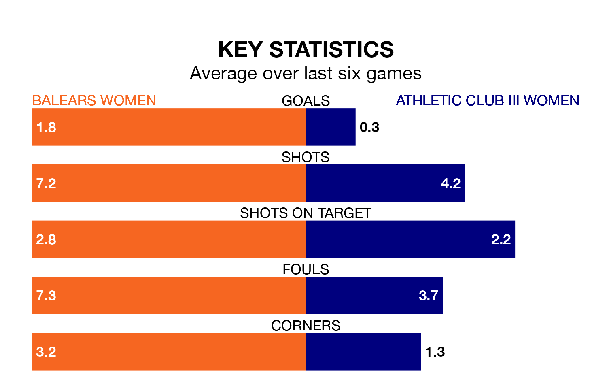

Athletic Club III Women travel for Sunday's early match against Balears Women looking to bounce back from defeat last time out in Segunda Federación Femenina.
Athletic Club III, who sit zero in the league after 15 games, fell to a 3-0 home defeat to Zaragoza Women on January 6.
They face a Balears side who picked up a win in their last match, a 3-0 victory against Viajes Interrías Women, and who sit second in the table.
With 33 goals in 15 games so far this season, Balears are the league's highest scorers with 2.2 goals per game. And they are conceding fewer than average, letting in 15 goals at a rate of 1.0 per game.
Athletic Club III, meanwhile, are below average scorers, with 1.0 goal per game, compared to a league average of 1.3. They have conceded 1.5 goals per game.
The home side are in reasonable form in Segunda Federación Femenina, with four wins and two losses from their last six games.
With a win and five losses over that period, the visitors' form is much worse – they have taken three points from 18, compared to Balears's 12.
Updated: 11:31, 09/01/24